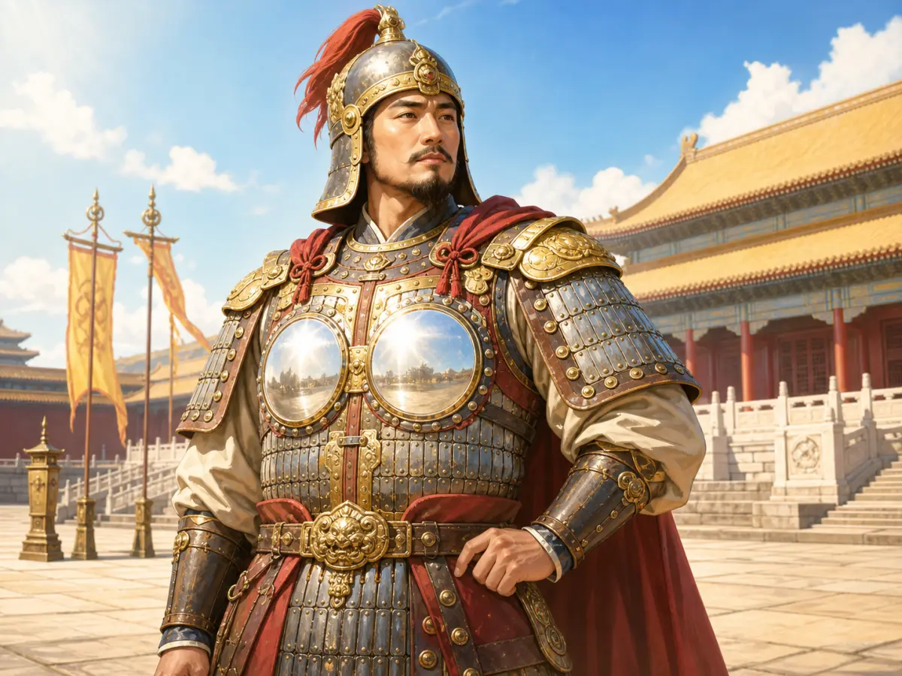
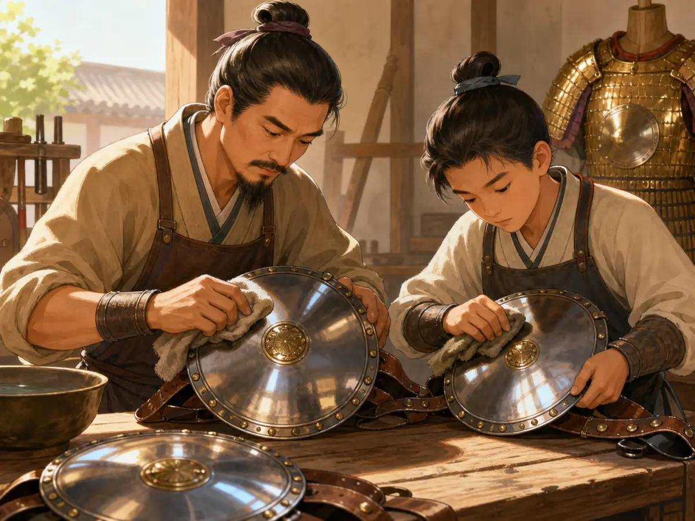
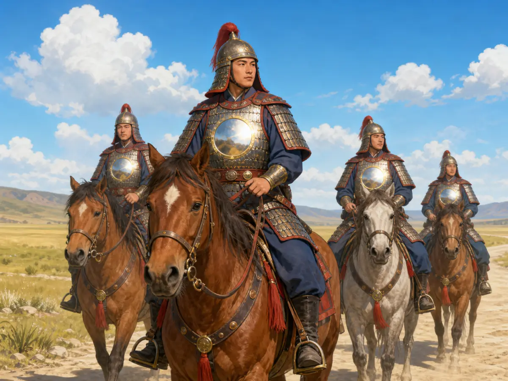
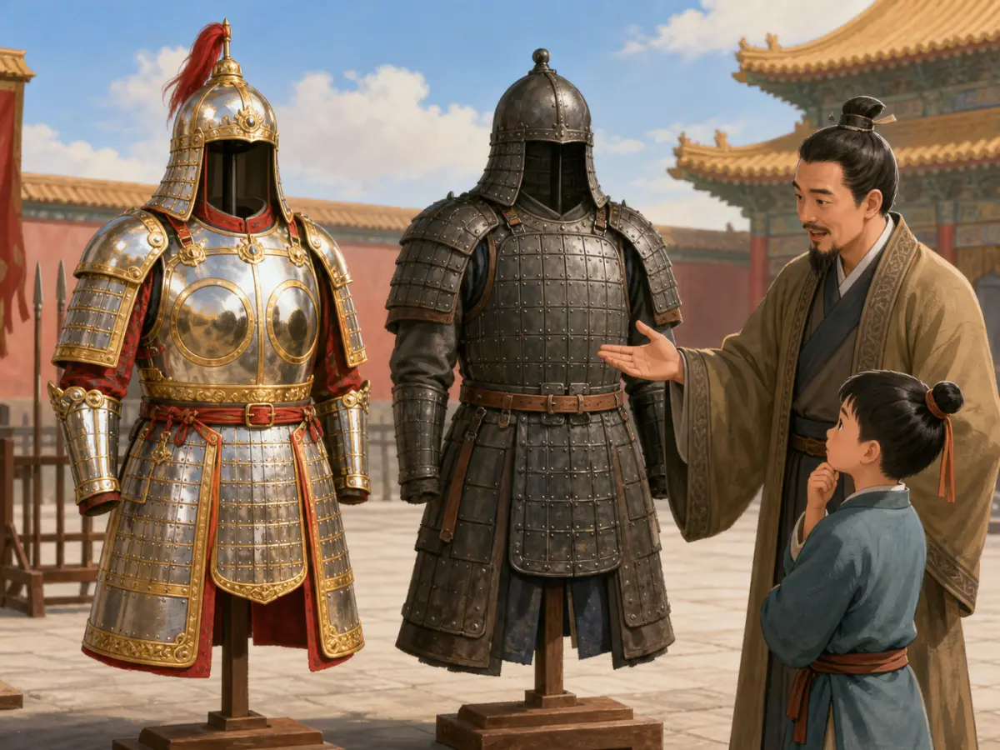

明光铠真的像镜子一样吗？
Did Mingguang Armor Really Shine Like a Mirror?
阅读难度 · 困难Reading level · Hard
Page 1
先别相信这两面“镜子”
Do Not Trust Those Two “Mirrors” Yet

The mirror-like guards, general, and palace are modern inventions. No complete Tang suit like this survives for comparison.
第一幅图里的将军站在宫殿前，胸口两块圆板亮得能映出远处风景。这是一件非常吸引人的“明光铠”：华丽、整齐，而且一眼就能看懂“明光”两个字。
问题是，我们没有这样一套从唐代完整保存下来的铠甲。画中的将军、宫殿、披风和镜面反光都是现代艺术家的选择。要研究真正的明光铠，我们得把漂亮的复原图暂时放到一边，打开三个线索盒：古书里的名称、墓葬里的俑像和壁画，以及学者对这些材料的不同解释。
In the first picture, a general stands before a palace with two round plates on his chest. They are so shiny that they reflect the scenery in front of him. The armor is beautiful, orderly, and seems to explain the name mingguang, or “bright light,” at a glance.
There is one problem: no complete Tang suit like this has survived for us to examine. The general, palace, cape, and mirror-bright reflections are choices made by a modern artist. To investigate the real armor, we must set the handsome reconstruction aside and open three boxes of clues: names in old texts, figures and paintings from tombs and temples, and scholars’ different explanations of that evidence.
Page 2
古书先给了我们一个名字
Old Texts Give Us a Name
“明光甲”这个名称出现得很早。三国时期曹植在一篇谢表中说，父亲曹操曾赐给他黑光铠和明光铠。到了六世纪，《周书》记载将领蔡祐穿着“明光铁铠”作战，敌人称他为“铁猛兽”。这些文字证明明光甲不是现代人发明的名字，也说明它在唐代以前已经存在。
隋代记录又写到大队骑兵穿着用青丝或白丝连缀的明光甲，战马也披着铁制马甲。唐代制度书《唐六典》列出十三种铠甲，把明光甲放在第一种。明光甲显然是一类受到重视的装备，而不只是诗人幻想出来的闪亮衣服。
可是，古书没有附上结构图。它们告诉我们名字、赏赐、连缀材料和使用场合，却很少解释每一片甲长什么样。这就像只拿到一张装备清单，却没有打开箱子看实物。
The name mingguang armor appeared early. In the third century, Cao Zhi wrote that his father, Cao Cao, had given him both “black light” and “bright light” armor. In a sixth-century history, the general Cai You wears “bright-light iron armor” in battle. His enemies call him an “iron beast.” These passages show that the name is ancient and existed well before the Tang dynasty.
A Sui account describes large cavalry groups wearing mingguang armor laced with blue or white silk, while their horses wore iron armor. The Tang government work called the Six Statutes of the Tang Dynasty lists thirteen kinds of armor and places mingguang first. It was clearly an important equipment category, not just a sparkling costume dreamed up by poets.
Yet the texts do not include construction diagrams. They give us names, gifts, lacing material, and moments of use, but rarely explain the shape of every part. It is like finding an equipment list without being allowed to open the boxes.
Page 3
俑像和壁画给了我们形状
Figures and Paintings Give Us Shapes
北朝到隋唐的墓葬中，考古学家发现不少武士俑。有些俑的胸前、背后带着圆形或椭圆形护板，肩上有护膊，腰下还有甲裙。墓室壁画和佛教护法、天王的图像里，也能看到相似的装束。故宫和中国国家博物馆等机构通常把这类圆护铠称为明光铠。
这些图像非常珍贵，却不是战场照片。镇墓武士和佛教天王首先是保护墓主人或佛法的艺术形象，工匠可能简化、夸张或装饰铠甲。陶俑上的圆盘究竟是铁、铜、皮革上的装饰，还是别的材料，光看烧制后的陶土不一定能判断。
更大的困难是：北朝和隋唐的完整明光铠实物至今没有得到公认的发现。我们能把文字和图像放在一起比较，却不能像研究一件保存完好的现代防弹衣那样，把它翻过来检查接缝和内衬。
Archaeologists have found many warrior figures in tombs from the Northern Dynasties through the Sui and Tang periods. Some have round or oval guards on the chest and back, armor over the shoulders, and hanging panels below the waist. Similar equipment appears on painted tomb warriors and Buddhist guardians. Museums including the Palace Museum and the National Museum of China commonly identify this round-guard style as mingguang armor.
These images are precious, but they are not battlefield photographs. Tomb guardians and Buddhist Heavenly Kings were artistic protectors. Their makers could simplify, enlarge, or decorate armor. Once a guard has been modeled in clay, we cannot always tell whether the original part was iron, bronze, decorated leather, or something else.
The greatest difficulty is that no complete suit of Northern Dynasties or Tang mingguang armor has been securely identified. We can compare words and pictures, but we cannot turn the armor over and inspect its seams and lining as we could with a modern protective vest.
Page 4
圆护铠一定就是明光铠吗？
Does Every Round-Guard Armor Count as Mingguang?
传统解释认为，圆护经过打磨后像铜镜一样反光，所以这种甲叫“明光”。许多博物馆说明沿用这个解释，它也让图像里的双圆护和古书里的名字顺利拼在一起。
但有学者提出不同意见。古书还写过“明光人马铠”，表示人和马的铠甲都可以称明光；已经发现的马甲图像却没有同样的两块圆护。唐代敦煌壁画中，有些圆护里面画满鳞片或人物，并不像镜面。还有研究认为，“明光”可能强调甲身明亮、浅色、细密或华美，而不专指圆盘。
目前最诚实的结论不是选一边宣布胜利，而是说：圆护铠是中古图像中确实存在的重要样式，也常被称作明光铠；不过，“所有圆护铠都等于古书里的明光甲”仍然值得讨论。古代名称和现代分类不一定能严丝合缝地扣在一起。
The traditional explanation says that round metal guards were polished until they reflected light like bronze mirrors. That is why, according to this view, the armor was called mingguang. Many museum labels follow this explanation, and it neatly joins the two round guards in art with the name in old books.
Some scholars disagree. Ancient texts also mention mingguang armor for both people and horses, yet known images of horse armor do not carry the same pair of circles. In some A famous place in northwestern China known for its cave murals. paintings, round chest guards contain scales or faces instead of smooth mirror-like surfaces. One recent interpretation argues that mingguang might describe armor that was bright, pale, finely made, or richly decorated rather than one particular round plate.
The most honest conclusion is not to choose a side and declare victory. Round-guard armor certainly appears in medieval Chinese art and is often called mingguang armor. However, whether every round-guard image matches the equipment category in old texts is still open to debate. Ancient names and modern museum categories do not always click together perfectly.
Page 5
圆护究竟能做什么？
What Could the Round Guards Do?

The workers, tools, and mirror-like plates are imagined. Evidence does not establish a fixed multi-day polishing process.
如果胸前真的装有坚固的金属护板，它当然可能加强身体中央的防护。弧形表面也可能帮助力量向旁边分散。不过，俑像只让我们看见外形，无法告诉我们每块护板的厚度、金属成分和实战效果。
旧稿说铁匠用细砂打磨好几天，直到护板照出人影；又让几十名骑兵用反光刺得敌人睁不开眼。这些情节没有找到可靠的古代记录或实验数据。洁净金属在阳光下会反光，这一点不难理解，但“好看见一道闪光”与“能把敌军照瞎”完全不是同一个结论。
第二幅图里的工匠、少年、布条和三块巨大圆镜也是现代想象。它可以帮助我们提出“古人怎样加工表面”的问题，却不能回答加工用了几天、用什么磨料，或每套铠甲都亮到什么程度。
If a strong metal plate covered the chest, it could reinforce the center of the body. A curved surface might also help spread the force of a blow. But a figure shows only the outside shape. It cannot tell us the thickness, metal mixture, or battlefield performance of the original guard.
The old article claimed that armor makers polished each plate for several days until it showed a reflection. It then imagined rows of cavalry using the glare to blind their enemies. No reliable early record or experiment was found for either detail. Clean metal can reflect sunlight, but “someone could notice a flash” and “the armor blinded an army” are two very different claims.
The second picture is imagined too. We do not know these craftspeople, their polishing cloths, or the three giant round plates on their table. The scene can help us ask how ancient workers finished metal surfaces. It cannot tell us how many days the job took, which abrasive they used, or how shiny every suit became.
Page 6
只有将军和精锐能穿吗？
Was It Only for Generals and Elite Troops?

The matching riders and mirror-bright guards are artistic choices. Their unarmored horses do not reconstruct Sui fully armored cavalry.
早期文献确实常把明光甲与贵重赏赐和著名将领联系起来。曹操赐甲给曹植，北魏皇帝也曾把“细明光人马铠”作为珍贵礼物。因此，制作精细的版本可能带有身份和威仪。
但“只有高级将领能穿”也说得太满。隋书描述成队的骑兵统一穿明光甲，敦煌文书还记录一支队伍清点二十多具明光甲。到了唐代，战争记录中的缴获数量甚至以千计，虽然不同史书给出的数字并不一致。这些材料说明，明光甲在某些时期已经不只是孤零零的一件将军礼服。
第三幅图让四名骑兵穿着同样的镜面圆护甲，却没有给战马披甲。它不是隋代“人马具装”部队的准确复原，也不能证明某个骑兵单位真的这样列队。图像最有用的地方，是提醒我们同时问：人的甲怎样连，马是否也披甲，装备能不能成批供应？
Early texts often connect mingguang armor with valuable gifts and famous men. Cao Cao gave a suit to Cao Zhi, and a Northern Wei emperor presented fine mingguang armor for both rider and horse. Carefully made versions could clearly display rank and prestige.
But “only high commanders wore it” goes too far. The Sui history describes organized cavalry groups wearing matching mingguang armor. A Dunhuang document counts more than twenty suits in one unit. Tang histories even report captures numbering in the thousands, although their totals disagree. By some periods, this armor was more than one lonely general’s ceremonial suit.
The third picture puts four riders in matching, mirror-bright chest guards, while their horses have no armor. It is not an exact reconstruction of the Sui formations in which both riders and horses were armored. It does not prove that one cavalry unit rode in precisely this arrangement. Its real value is that it prompts better questions: How was the human armor laced? Were the horses protected too? Could an army supply many matching suits?
Page 7
为什么俑像看起来比真人资料还多？
Why Do We Have More Figures Than Real Armor?
铁甲会生锈，皮革、丝绳和内衬更容易腐烂。即使一套铠甲埋进地下，不同材料也可能散开，最后只剩碎片和锈块。相反，陶俑和石刻本来就是为长久保存而做，壁画又常留在封闭墓室或洞窟里。
因此，我们今天看到的“明光铠世界”里，镇墓武士和佛教天王特别多，普通士兵反而很安静。这不一定表示战场上到处都是神将般的华丽铠甲，而是保存条件替历史挑选了证人。
历史学家必须问：这件图像表现的是现实装备、礼仪服装，还是理想化的保护者？同一件作品可能三者都有一点。承认图像有局限，并不会让它失去价值；反而能让我们更仔细地看它。
Iron rusts. Leather, silk cords, and padded linings decay even faster. When a suit is buried, its materials can separate until only fragments and lumps of corrosion remain. Clay figures and stone carvings were made to last, while paintings sometimes survived inside sealed tombs or protected caves.
That is why the surviving world of mingguang armor is crowded with tomb guardians and Buddhist Heavenly Kings while ordinary soldiers stay strangely quiet. It does not prove that every battlefield glittered with godlike armor. Preservation chose which witnesses could reach us.
Historians must ask whether an image shows working equipment, ceremonial dress, or an ideal protector. One artwork may contain a little of all three. Recognizing that limit does not make the image useless. It teaches us to look more carefully.
Page 8
它后来被棉甲取代了吗？
Did Cotton Armor Simply Replace It?

The complete suits, stands, teacher, and child are imagined. The dark armor is not proof of one direct successor to mingguang armor.
旧稿把变化写成一条直线：唐代明光铠太耀眼，宋代改穿更重的铁甲，明代又用棉甲把它淘汰。真实历史没有这么整齐。文献显示，明光甲到五代和宋代仍在使用；宋代还有给士兵制作“明光细网甲”、后来增加丝织内衬以免磨伤身体的记录。
元明以后，“明光甲”这个名称逐渐退出常见记录，铠甲的结构、材料和军事环境也继续变化。但是，没有一件资料告诉我们某一天全军脱下明光铠、第二天统一换上棉甲。旧样式可能减少、改变名称、与新结构并存，某些图像形式还会继续留在神将艺术里。
第四幅图把一套亮甲和一套黑甲并排放在现代展架上，旁边还有老师和孩子。它适合表现“比较”，却不是古代军械库，也不能证明黑甲就是明光铠唯一的下一代。
The old article drew a straight line: bright Tang armor gave way to heavier Song armor, and Ming cotton armor then replaced it. History was not so tidy. Texts still mention mingguang armor in the Five Dynasties and Song periods. One Song order even discusses adding a silk lining to finely linked mingguang armor so that it would not scrape soldiers’ bodies.
After the Song, the name became less common while armor structures, materials, and military needs kept changing. No source tells us that one army removed all its mingguang armor on one day and issued cotton armor the next. Older forms could decline, change names, or exist beside new construction. Their visual features could also survive in the art of divine guardians.
The fourth image places a bright suit and a dark suit on modern display stands while a teacher speaks to a child. It is useful as a comparison, but it is not an ancient armory. The black suit cannot prove that one single kind of armor was the direct replacement for mingguang armor.
真正闪亮的是研究方法
The Brightest Part Is the Method
我们确定知道古书里有“明光甲”这个名字，知道它从三国到唐宋都曾被赏赐、穿用和记录，也知道北朝至隋唐艺术中出现了醒目的圆护铠。我们还不知道的是，文献名称与每一种圆护图像怎样一一对应，以及真实铠甲究竟亮到什么程度。
所以，明光铠最好的故事不是“镜子把敌军照瞎”，而是一场证据拼图。下一次看到一张完美的古代铠甲复原图，不妨问三个问题：它依据哪段文字？参考哪件俑像或壁画？画家为了补上空白，又自己决定了什么？
We know that old texts used the name mingguang armor. We know it was given, worn, and recorded from the third century into the Tang and Song periods. We also know that striking round-guard armor appears in art from the Northern Dynasties through the Tang. What remains uncertain is how each image matches the written name and how brightly real armor shone.
The best story about mingguang armor is therefore not a tale of mirrors blinding an army. It is an evidence puzzle. The next time you see a perfect reconstruction of ancient armor, ask three questions: Which text supports it? Which figure or painting inspired it? What did the modern artist decide when the evidence ran out?